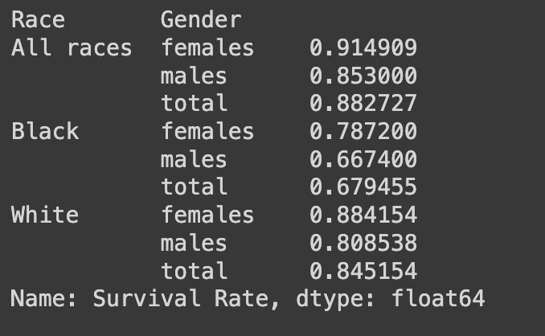
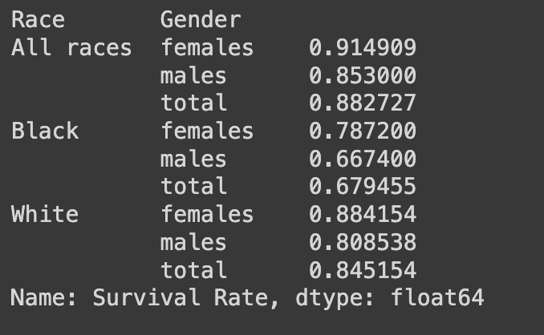

By analyzing the numbers of incedence rates, diagnosis rates, populations, etc., we can better understand the cause of inquity in skin cancer diagnosis.

Disparities in Diagnosis for Cancer
In the visualization to the left, we can see that the rate of diagnosis of skin cancer is higher in white individuals, taking up 93.8% of the graph. Although white patients are more commonly diagnosed with skin cancer, looking at the graph to the right lets us know that most POC are diagnosed with skin cancer at a later stage than white patients.
Disparities in Survival Rates for Skin Cancer
When aggregating the general survival rate for all types of cancer, black females (38%) and black males(36%) have a lower survival rate compared to that of the white demographic with a total average of 47%.
.png) 
Understanding the general lower survival rate of black patients with cancer is also reflected in the survival rate for skin cancerficall. While the mortality rate is higher in skin cancer than any other type, patients of color still die at a disproportionate rate compared to their white counterparts. This is evident in the average survival rates calculated per demographic showing that white patients have a survival rate of 84.5%. In comparison, black patients only have a survival rate of 70% within five years of battling skin cancer.
Chatbot
close-
smart_toy
Hi there 👋
How can I help you today?